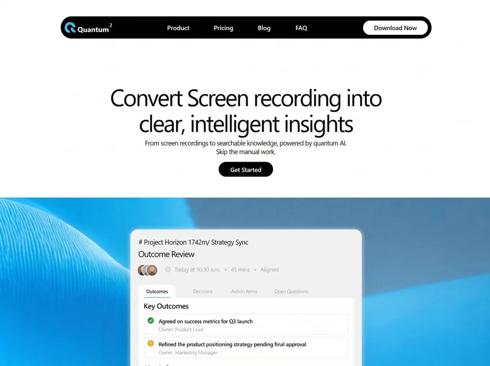

Quantum Lucid
SaaSsaasyilai-ai 公开页面
收录时间：2026-08-28正文：20,665 字符

本地预览图 · jpeg
完整提示词
Build a SINGLE standalone file: index.html (inline CSS + JS, no frameworks, no extra files). Recreate this exact Quantum² marketing landing page pixel-for-pixel: one-screen hero, black pill nav, two-line headline, subcopy, Get Started, full-bleed cyan video band, and a fixed-geometry product mockup card sitting on the band. html lang="en". Title: Quantum² — Convert screen recording into clear, intelligent insights. Viewport: width=device-width, initial-scale=1, viewport-fit=cover.
════════════════════════════════════════
FONT (required)
════════════════════════════════════════
Use Figtree as a VARIABLE font, weight axis 100–900, font-display:block (never swap/synthesize bold). Load from Google Fonts:
https://fonts.googleapis.com/css2?family=Figtree:wght@100..900&display=block
Fallback stack: Figtree, -apple-system, BlinkMacSystemFont, 'Segoe UI', Helvetica, Arial, sans-serif.
Body: -webkit-font-smoothing:antialiased; -moz-osx-font-smoothing:grayscale; text-rendering:geometricPrecision.
Do NOT use Inter, SF Pro, or system UI as the primary face.
CSS variables on :root — use these EXACT tokens (fractional weights are real variable-font instances):
Family
--font-sans: 'Figtree', -apple-system, BlinkMacSystemFont, 'Segoe UI', Helvetica, Arial, sans-serif;
Type scale (desktop)
--fs-display : 55.7px; /* hero h1 */
--fs-title : calc(var(--dp) * 20); /* card title */
--fs-heading : calc(var(--dp) * 17); /* panel heading */
--fs-body : 16.1px; /* hero sub */
--fs-eyebrow : calc(var(--dp) * 15.8);
--fs-ui : 15px; /* nav links, buttons */
--fs-meta : calc(var(--dp) * 14.3);
--fs-item : calc(var(--dp) * 12.9);
--fs-caption : calc(var(--dp) * 12.2);
--fs-tab : calc(var(--dp) * 12.1);
--fs-sup : 11.4px; /* wordmark superscript */
--fs-wordmark: 17.1px;
Weights
--fw-light : 388;
--fw-regular : 470;
--fw-medium : 500;
--fw-semibold : 511;
--fw-bold : 577;
--fw-black : 783;
Tracking (tight throughout)
--tr-display : -0.0572em;
--tr-title : -0.0570em;
--tr-heading : -0.0200em;
--tr-body : -0.0475em;
--tr-eyebrow : -0.0293em;
--tr-ui : -0.0080em;
--tr-cta : -0.0200em;
--tr-meta : -0.0447em;
--tr-item : -0.0287em;
--tr-caption : -0.0295em;
--tr-tab : -0.0398em;
--tr-wordmark: -0.0075em;
Leading
--lh-display : 61px;
--lh-body : 20px;
--lh-flat : 1;
--lh-display-ratio : 1.1;
--lh-body-ratio : 1.45;
Ink / surfaces
--c-ink : #000000;
--c-ink-soft : #2e2e2e; /* active tab */
--c-muted : #b8b8b8; /* meta, idle tabs, owners */
--c-on-dark : #ffffff;
--c-on-light : #000000;
--c-surface-nav : #000000;
--c-surface-card : #f2f2f2;
--c-surface-panel : #ffffff;
--c-border-row : #ededed;
--c-accent : #38c6ec;
Typography utility classes (apply these, do not invent new type):
.t-display fs-display fw-regular tr-display lh-display color ink
.t-body fs-body fw-regular tr-body lh-body color ink
.t-title fs-title fw-light tr-title lh-flat color ink
.t-heading fs-heading fw-semibold tr-heading lh-flat color ink
.t-eyebrow fs-eyebrow fw-light tr-eyebrow lh-flat color ink
.t-meta fs-meta fw-light tr-meta lh-flat color muted
.t-item fs-item fw-medium tr-item lh-flat color ink
.t-caption fs-caption fw-light tr-caption lh-flat color muted
.navmenu__link : fs-ui fw-medium tr-ui lh-flat color on-dark, no underline
.navmenu__cta : fs-ui fw-bold tr-cta lh-flat color on-light, no underline
════════════════════════════════════════
MEDIA — USE THESE EXACT URLS (do not substitute)
════════════════════════════════════════
Band video (REQUIRED, this exact CloudFront URL):
src="https://d8j0ntlcm91z4.cloudfront.net/user_38xzZboKViGWJOttwIXH07lWA1P/hf_20260826_125119_4963ddd4-c287-4044-b014-b68943cdd8bd.mp4"
Poster (same origin):
poster="https://d8j0ntlcm91z4.cloudfront.net/user_38xzZboKViGWJOttwIXH07lWA1P/hf_20260826_125039_45a71f04-36dd-4620-99d8-7526316d439e.png"
<video class="band__video" autoplay muted loop playsinline> covering the band:
position absolute; inset 0; width/height 100%; object-fit:cover; object-position:center top; z-index:0.
Band fallback color #0db5ed. Do not use a static gradient or Unsplash in place of this video.
════════════════════════════════════════
PAGE SHELL
════════════════════════════════════════
*, *::before, *::after { box-sizing:border-box }
html, body { margin:0; padding:0; height:100%; overflow:hidden; background:#fff }
#viewport { position:fixed; inset:0; overflow:hidden; background:#fff }
#stage {
position:absolute; top:0; left:0;
width:1290px; height:860px;
transform-origin:0 0; background:#fff;
}
Two nested wrappers: #viewport > #stage > all content.
════════════════════════════════════════
COPY — EXACT STRINGS AND LINE BREAKS
════════════════════════════════════════
Wordmark: Quantum<sup>2</sup> (sup: fs-sup, fw-black, relative top:-5px left:1px)
Nav links (href="#"): Product, Pricing, Blog, FAQ
Nav CTA: Download Now
Hero CTA: Get Started
h1.hero-h1.t-display (white-space:pre-line — keep this exact two-line break):
Convert Screen recording into
clear, intelligent insights
p.hero-sub.t-body (white-space:pre-line — keep this exact break):
From screen recordings to searchable knowledge, powered by quantum AI.
Skip the manual work.
Card:
eyebrow: # Project Horizon 1742m/ Strategy Sync
title: Outcome Review
meta: Today at 10:30 a.m. • 45 mins • Aligned (use <span class="sep">•</span> with padding 0 calc(var(--dp)*10))
tabs: Outcomes (active), Decisions, Action Items, Open Questions
panel heading: Key Outcomes
row1 title: Agreed on success metrics for Q3 launch
row1 owner: Owner: Product Lead
row2 title: Refined the product positioning strategy pending final approval
row2 owner: Owner: Marketing Manager
════════════════════════════════════════
LOGO SVG (exact path, fill #38c6ec)
════════════════════════════════════════
<svg class="logo" viewBox="0 0 26 25" fill="none" aria-label="Quantum squared">
<path fill-rule="evenodd" d="M9.45 24.95 L7.07 24.09 L5.56 23.30 L3.33 21.03 L2.31 19.44 L0.74 16.05 L0.27 13.91 L0.29 11.25 L0.80 8.75 L1.95 6.20 L3.26 4.50 L5.15 2.67 L7.77 1.02 L9.91 0.18 L12.16 -0.20 L15.22 -0.16 L17.61 0.35 L19.30 1.06 L20.88 2.06 L22.23 3.37 L24.01 5.48 L24.76 6.58 L25.70 8.63 L26.00 10.35 L26.02 11.35 L25.54 12.12 L24.96 12.32 L22.35 12.36 L21.46 12.18 L20.78 11.85 L20.32 11.37 L19.45 9.56 L17.88 7.58 L16.59 6.60 L14.59 5.84 L13.24 5.69 L11.54 5.93 L10.47 6.44 L9.12 7.35 L7.92 8.50 L6.70 10.55 L6.26 12.65 L6.41 14.36 L7.14 15.86 L8.63 17.79 L12.57 20.70 L12.96 21.60 L13.13 22.82 L12.93 24.36 L12.65 24.86 L12.03 25.35 L11.27 25.42 L9.45 24.95 Z M24.55 25.53 L22.49 24.77 L19.56 23.18 L18.15 22.07 L16.63 20.48 L16.14 19.79 L15.63 18.71 L14.66 15.66 L14.59 14.50 L14.75 13.92 L15.12 13.45 L15.85 13.10 L16.91 12.88 L18.90 12.85 L19.49 13.04 L19.94 13.38 L20.25 13.88 L20.86 15.66 L21.97 17.30 L23.05 18.22 L25.00 19.43 L26.05 20.27 L26.34 20.66 L26.63 21.86 L26.51 23.68 L25.79 25.10 L25.35 25.42 L24.55 25.53 Z" fill="#38c6ec"/>
</svg>
Logo box: 26×25px, absolute left:9px top:13px.
════════════════════════════════════════
DESKTOP LAYOUT (≥940px) — ABSOLUTE STAGE 1290×860
════════════════════════════════════════
Everything is absolutely placed on #stage. Design reference 1290×860.
NAV .nav
position:absolute; left:calc(50% - 439px); top:43px; width:880px; height:52px;
background:#000; border-radius:26px;
.wordmark: absolute left:40px top:2px height:52px; flex align center; fs-wordmark fw-black tr-wordmark color white; nowrap.
Nav links .nav a.link: absolute top:0 height:52px; flex align center; transform:translateX(-50%); fs-ui fw-medium tr-ui color white; no underline; nowrap.
.link.l1{left:279px} /* Product */
.link.l2{left:386.5px} /* Pricing */
.link.l3{left:483px} /* Blog */
.link.l4{left:571px} /* FAQ */
Buttons .btn: absolute; border:0; border-radius:17px; height:34px; flex center; inherit font; fs-ui tr-cta lh-flat nowrap cursor pointer no underline.
.btn--nav: left:718px; top:9px; width:153px; background:#fff; color:#000; fw-bold. Text: Download Now
.btn--hero: left:calc(50% - 64px); top:calc(388px + var(--dsk-hero-dy, 0px)); width:129px; background:#000; color:#fff; fw-medium. Text: Get Started
HERO
.hero-h1: absolute left:0 right:0 top:calc(203px + var(--dsk-hero-dy, 0px)); margin:0; text-align:center; white-space:pre-line;
.hero-sub: absolute left:0 right:0 top:calc(333px + var(--dsk-hero-dy, 0px)); margin:0; text-align:center; white-space:pre-line;
BAND .band
position:absolute; left:0; right:0; top:calc(473px + var(--dsk-band-dy, 0px)); bottom:0;
border-radius:0; overflow:hidden; background-color:#0db5ed;
Full bleed — no 9px gutter, no top radius.
CARD GEOMETRY (cannot reflow — scale via --u / --dp)
:root {
--u : 548px;
--dp : calc(var(--u) / 548);
}
.card: absolute; left:calc(50% - 273px); top:calc(549px + var(--dsk-band-dy, 0px));
width:var(--u); height:calc(var(--dp)*340);
transform:scale(var(--dsk-card-s, 1)); transform-origin:top center;
background:#f2f2f2; border-radius:calc(var(--dp)*16); overflow:hidden;
box-shadow:
0 0 0 1px rgba(255,255,255,.6),
0 0 calc(var(--dp)*9) calc(var(--dp)*3) rgba(255,255,255,.5),
0 calc(var(--dp)*22) calc(var(--dp)*64) rgba(2,72,105,.16);
Inside the card EVERY length is a multiple of --dp (design pixels of a 548×340 mockup):
.eyebrow left 19 top 21 nowrap
.cardtitle left 18 top 47 nowrap
.meta left 15 top 81 height 28
.avatars left 0 top 0 height 28
.av 28×28 circle; border max(1px, calc(var(--dp)*2)) solid #fff; background-size cover
.av1 left 0; .av2 left 11; .av3 left 22 (overlapping stack)
.clockicon left 66 top 5 14×14
.metatext left 89 top -2 height 28 flex align center nowrap
Clock SVG 14×14:
circle cx=7 cy=7 r=7 fill #d9d9d9
path d="M7 3.6V7.2l2.3 1.4" stroke #f2f2f2 stroke-width 1.3 round
Three avatars as inline SVG data-URI background-image (simple person glyphs):
av1: bg #8d6a52, head #d9a882, body #3c3a44
av2: bg #b9b3ad, head #e8c4a0, body #786f66
av3: bg #a08b7a, head #dda882, body #6b4f3f
Each: 40×40 svg rect + circle r=9 at (20,16 or 15) + ellipse cy=38 rx=14 ry=13.
TABS .tabs: left 0 right 0 top 129 height 30
.tab: absolute top 0 height 30; flex align; inherit font; fs-tab fw-light tr-tab color muted; no border/bg/padding; nowrap
.tab.is-active: left 19; padding 0 18; fw-medium; color #2e2e2e; bg white; border-radius 8 8 0 0
.tab.is-active::after: accent underline 2px (max(1px, calc(var(--dp)*2))) at bottom, inset left 12 right 13, fill #38c6ec
.t2 left 148; .t3 left 239; .t4 left 341
Tabs are visual only (Outcomes stays active). Do not implement tab switching unless asked.
PANEL .panel: left 19 top 160 width 511 height 169; bg white; border-radius 0 8 8 8
.panel__heading left 12 top 10 nowrap
.row: left 13 width 485 height 46; bg white; border 1px solid #ededed; radius 8; box-shadow 0 1px calc(var(--dp)*2) rgba(0,0,0,.03)
.row1 top 36; .row2 top 87
.dot left 7 top 7 15×15
.rowtitle left 33 top 10 nowrap
.rowowner left 33 top 27 nowrap
Row1 check (green): circle fill #2a9a30; check path "M4.1 7.15 6.05 9.05 9.9 5.2" stroke #fff 1.5 round
Row2 question (amber): circle fill #f6a825; question-mark stroke #fff 1.25 + white dot r=0.78 at (6.97,10.05)
Burger + .navmenu exist in DOM at all widths but display:none on desktop.
════════════════════════════════════════
COMPACT / MOBILE @media (max-width:939.98px), (scripting: none)
════════════════════════════════════════
Swap the scaled stage for a real CSS Grid flow. Clear any JS transform.
:root inside this query:
--page-margin : clamp(16px, 3.4vw, 34px);
--fs-display-t : clamp(31px, 3.2vw + 1.6vh, 54px);
--fs-body-t : clamp(14px, 0.9vw + 0.5vh, 16.1px);
--gap-stack : clamp(14px, 2.4vh, 26px);
--card-inset : clamp(24px, 5.5vh, 76px);
--u : max(min(280px, 90vw), min(80vw, max(calc(1039px - 50.3vw), 60vh)));
--card-h : calc(var(--dp) * 340);
--band-h : min(calc(var(--card-inset) + var(--card-h) * .9), 52vh);
html,body { overflow:hidden }
#viewport { position:fixed; inset:0; overflow:hidden }
#stage {
position:static; width:100%; height:100dvh;
transform:none !important;
display:grid; grid-template-columns:100%;
grid-template-rows:
auto
minmax(clamp(20px, 3.5vh, 44px), 1fr)
auto auto auto
minmax(clamp(16px, 2.4vh, 30px), .85fr)
minmax(0, var(--band-h));
grid-template-areas: "nav" "." "head" "sub" "cta" "." "art";
padding-top: clamp(20px, 3.4vw, 43px);
}
NAV compact:
position:relative; grid-area:nav; left/top auto; height:52px;
width:min(calc(100% - 2 * var(--page-margin)), 820px); margin:0 auto;
display:flex; align-items:center; z-index:20;
Hide .nav a.link and .btn--nav.
.logo position static; margin-left:9px; flex:none
.wordmark position static; height auto; margin-left:6px
BURGER (shown only here):
display:flex; flex-direction:column; justify-content:center; gap:5px;
margin-left:auto; margin-right:9px; width:34px; height:34px; padding:0 7px;
background none; border 0; radius 17px; cursor pointer; tap-highlight transparent
.burger__bar: block; height 2px; width 100%; bg white; radius 1px; transition transform .22s ease, opacity .22s ease
focus-visible: outline 2px solid #38c6ec offset 2px
expanded: bar1 translateY(3.5px) rotate(45deg); bar2 translateY(-3.5px) rotate(-45deg)
aria-label Open menu / Close menu; aria-expanded; aria-controls="nav-menu"
NAV MENU .navmenu (dropdown from pill):
flex column; absolute top:calc(100% + 8px) right:0; min-width:216px; padding:10px;
bg #000; radius 20px; opacity 0; transform translateY(-6px);
transition opacity .2s ease, transform .2s ease; pointer-events none
.navmenu[hidden]{ display:flex } /* hidden attr drives state, not display */
.nav.is-open .navmenu { opacity:1; transform:none; pointer-events:auto }
.navmenu__link padding 11px 14px radius 12px; hover/focus bg rgba(255,255,255,.1)
.navmenu__cta margin-top 6px; padding 11px 14px; bg #fff; radius 17px; text-align center
Links: Product Pricing Blog FAQ + Download Now
HERO compact:
.hero-h1 grid-area head; position static; margin 0 page-margin then margin-inline auto;
max-width calc(100% - 2*page-margin); font-size --fs-display-t; line-height 1.1;
white-space:pre-line; text-wrap:balance
.hero-sub grid-area sub; position static; margin var(--gap-stack) auto 0;
max-width min(52ch, calc(100% - 2*page-margin)); font-size --fs-body-t; line-height 1.45;
letter-spacing --tr-body; white-space:NORMAL (release authored break so text-wrap:balance splits evenly)
.btn--hero grid-area cta; position static; justify-self center; margin-top calc(gap-stack * 1.4); left/top auto
BAND + CARD share grid-area:art
.band: position relative; left/right/top/bottom auto; margin 0; radius 0; min-height 0
KEEP the same video covering the band (object-fit cover, object-position center top). Do not replace video with a still image.
.card: position relative; justify-self center; align-self start; margin-top var(--card-inset); transform:none
Card still sizes from --u/--dp so internals stay proportional. Card is meant to overrun the band and clip at the viewport bottom (composition, not a bug). No page scrollbar on portrait phones.
@media (max-width:479.98px) {
.hero-h1 { white-space:normal; text-wrap:balance; } /* release two-line break */
}
@media (max-height:520px) { /* landscape phones: allow scroll so card is fully in the band */
:root { --band-h: calc(var(--card-h) + 2 * var(--card-inset)); }
html,body { height:auto; min-height:100%; overflow:visible }
#viewport { position:static; overflow:visible }
#stage { height:auto; min-height:100dvh }
}
@media (scripting: none) {
.nav:hover .navmenu, .nav:focus-within .navmenu { opacity:1; transform:none; pointer-events:auto }
}
@media (prefers-reduced-motion: reduce) {
* { animation:none !important; transition:none !important }
.navmenu, .burger__bar { transition:none }
}
════════════════════════════════════════
ENTRANCE ANIMATIONS (once on load)
════════════════════════════════════════
Motion tokens:
--ease-reveal : cubic-bezier(.22, 1, .36, 1);
--ease-settle : cubic-bezier(.16, 1, .30, 1);
--dur-nav : .62s;
--dur-navitem : .5s;
--dur-head : .92s;
--dur-copy : .62s;
--dur-cta : .58s;
--dur-panel : .94s;
CRITICAL: animate the independent `translate` property, NEVER `transform` (stage scale, link -50% centering, and card scale would be overwritten). Band/video does not animate.
Head script (before first paint, in <head> after CSS):
If prefers-reduced-motion:reduce, do nothing (page shows final state).
Else document.documentElement.setAttribute('data-enter','pending').
Initial [data-enter="pending"]:
.hero-h1 clip-path: inset(0 0 100% 0)
.nav opacity 0; translate 0 -10px
.hero-sub opacity 0; translate 0 14px
.btn--hero opacity 0; translate 0 14px
.card opacity 0; translate 0 22px
.logo, .wordmark, .nav a.link, .btn--nav opacity 0
Keyframes:
enter-wipe from clip-path inset(0 0 100% 0) to inset(0 0 0% 0)
enter-drop from opacity 0 translate 0 -10px to 1 / 0
enter-rise14 from opacity 0 translate 0 14px to 1 / 0
enter-rise22 from opacity 0 translate 0 22px to 1 / 0
enter-fade from opacity 0 to 1
Timeline [data-enter="run"] animation ... both:
.nav enter-drop dur-nav ease-settle delay .05s
.logo enter-fade dur-navitem ease-settle .18s
.wordmark enter-fade .22s
.link.l1 .26s
.link.l2 .30s
.link.l3 .34s
.link.l4 .38s
.btn--nav .42s
.hero-h1 enter-wipe dur-head ease-reveal .30s
.hero-sub enter-rise14 dur-copy ease-settle .62s
.btn--hero enter-rise14 dur-cta ease-settle .78s
.card enter-rise22 dur-panel ease-settle .88s
Body script: wait document.fonts.ready, then double rAF, then set data-enter="run". Fallback start at 1200ms. On .card animationend (once) OR 3000ms timeout, set data-enter="done" (drops all entrance styles so rest state is authored CSS). Only run once.
════════════════════════════════════════
DESKTOP FIT JS (min-width: 940px)
════════════════════════════════════════
Design width DW=1290, height DH=860, CARD_TOP=549, CARD_H=340, NAV_W=880, MINW=960, HERO_SHARE=0.55.
If below 940px: clear stage transform/width/height and return (CSS grid owns layout).
Else:
vw, vh = innerWidth, innerHeight
s = min(vh/DH, vw/MINW)
W = vw/s; H = vh/s
csMax = min(NAV_W, 0.80*W) / 548
cs = max(1, min((H - CARD_TOP)/CARD_H, csMax))
dy = max(0, H - CARD_TOP - CARD_H*cs)
heroDy = HERO_SHARE * dy
stage.style.width = W+'px'; height = H+'px'; transform = 'scale('+s+')'
Set CSS vars --dsk-card-s, --dsk-band-dy (px), --dsk-hero-dy (px)
Listen: resize, orientationchange, visualViewport.resize, pageshow, fonts.ready. On desktop, force-close the burger menu.
Burger JS: toggle .nav.is-open, aria-expanded, menu.hidden. Click outside closes. Escape closes and focuses burger. Clicking a menu link closes. stopPropagation on burger click.
════════════════════════════════════════
MARKUP ORDER inside #stage
════════════════════════════════════════
1. nav.nav
logo svg, .wordmark > .wordmark__lockup Quantum<sup>2</sup>
a.link.l1–l4, a.btn.btn--nav
button.burger (two .burger__bar spans)
#nav-menu.navmenu[hidden] with 4 links + .navmenu__cta
2. h1.hero-h1.t-display
3. p.hero-sub.t-body
4. a.btn.btn--hero
5. .band[role=presentation] > video.band__video (exact CloudFront src + poster)
6. .card with eyebrow, title, meta (avatars + clock + metatext), tabs, panel (heading + two rows)
════════════════════════════════════════
DO / DO NOT
════════════════════════════════════════
DO: one HTML file; Figtree variable; exact CloudFront video+poster; 1290×860 stage + JS fit on desktop; --dp card; grid compact below 940px; clip-path wipe on headline; independent translate for motion; card bleeds off bottom of band.
DO NOT: React/Next/Tailwind unless asked; Inter/system font as primary; replace the video URL; add extra sections (footer, logos row, pricing); round type sizes; use transform for entrance motion; stretch the nav into a full-width bar on mobile; show a scrollbar on portrait phones; invent new copy.
Match desktop 1290×860 and a ~390px phone as the two acceptance views.把上面的提示词完整复制到支持长文本的 AI 工具中，再按需要替换品牌名、配色与文案。提示词描述的是整页结构与动效节奏，生成后建议在真实浏览器里检查首屏加载和移动端表现。
来源与版权
该条目来自公开提示词页面，原始出处信息未随页面提供。
提示词文本与预览素材的版权归原作者或原平台所有，本站仅作索引与归档。若你是权利人并希望移除本条内容，请通过联系方式告知。